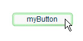

|

Dot syntax
The dot operator (
.
)
provides a way to access the properties and methods of an object.
Using dot syntax, you can refer to a class property or method by
using an instance name, followed by the dot operator and name of
the property or method. For example, consider the following class
definition:
class DotExample
{
public var prop1:String;
public function method1():void {}
}
Using dot syntax, you can access the
prop1
property
and the
method1()
method by using the instance
name created in the following code:
var myDotEx:DotExample = new DotExample();
myDotEx.prop1 = "hello";
myDotEx.method1();
You can use
dot syntax when you define packages. You use the dot operator to refer
to nested packages. For example, the EventDispatcher class resides
in a package named events that is nested within the package named
flash. You can refer to the events package using the following expression:
flash.events
You
can also refer to the EventDispatcher class using this expression:
flash.events.EventDispatcher
Working with objects
ActionScript is what’s known as
an object-oriented programming language. Object-oriented programming
is simply an approach to programming. It’s really nothing more than
a way to organize the code in a program, using objects.
Earlier the term “computer program” was defined as a series of
steps or instructions that the computer performs. Conceptually,
then, you can imagine a computer program as just a single long list
of instructions. However, in object-oriented programming, the program
instructions are divided among different objects. The code is grouped
into chunks of functionality, so related types of functionality
or related pieces of information are grouped in one container.
Adobe Flash Professional
If you’ve worked
with symbols in Flash Professional, you’re already used to working
with objects. Imagine you’ve defined a movie clip symbol such as
a drawing of a rectangle and you’ve placed a copy of it on the Stage.
That movie clip symbol is also (literally) an object in ActionScript;
it’s an instance of the MovieClip class.
There are various characteristics
of the movie clip that you can modify. When it’s selected you can
change values in the Property inspector like its x coordinate or
its width. You can also make various color adjustments like changing
its alpha (transparency) or applying a drop-shadow filter to it.
Other Flash Professional tools let you make more changes, like using
the Free Transform tool to rotate the rectangle. All of these ways
that you can modify a movie clip symbol in Flash Professional are
also available in ActionScript. You modify the movie clip in ActionScript
by changing the pieces of data that are all put together into a
single bundle called a MovieClip object.
In ActionScript
object-oriented programming, there are three types of characteristics
that any class can include:
-
Properties
-
Methods
-
Events
These elements are used to manage the pieces of data used by
the program and to decide what actions are carried out and in what
order.
Properties
A property represents one of
the pieces of data that are bundled together in an object. An example
song object can have properties named
artist
and
title
;
the MovieClip class has properties like
rotation
,
x
,
width
,
and
alpha
. You work with properties like individual
variables. In fact, you can think of properties as simply the “child”
variables contained in an object.
Here are some examples of ActionScript code that uses properties.
This line of code moves the MovieClip named
square
to
the x coordinate 100 pixels:
square.x = 100;
This code uses the rotation property to make the
square
MovieClip
rotate to match the rotation of the
triangle
MovieClip:
square.rotation = triangle.rotation;
This code alters the horizontal scale of the
square
MovieClip
making it one-and-a-half times wider than it used to be:
square.scaleX = 1.5;
Notice the common structure: you use a variable (
square
,
triangle
)
as the name of the object, followed by a period (
.
)
and then the name of the property (
x
,
rotation
,
scaleX
).
The period, known as the
dot operator
, is used to indicate
that you’re accessing one of the child elements of an object. The
whole structure together, “variable name-dot-property name,” is
used like a single variable, as a name for a single value in the
computer’s memory.
Methods
A
method
is an action that
an object can perform. For example, suppose you’ve made a movie
clip symbol in Flash Professional with several keyframes and animation
on its timeline. That movie clip can play, or stop, or be instructed
to move the playhead to a particular frame.
This code instructs the MovieClip named
shortFilm
to
start playing:
shortFilm.play();
This line makes the MovieClip named
shortFilm
stop
playing (the playhead stops in place, like pausing a video):
shortFilm.stop();
This code makes a MovieClip named
shortFilm
move
its playhead to Frame 1 and stop playing (like rewinding a video):
shortFilm.gotoAndStop(1);
Methods, like properties, are accessed by writing the object’s
name (a variable), then a period, and then the name of the method
followed by parentheses. The parentheses are the way that you indicate
that you are
calling
the method, or in other words, instructing
the object to perform that action. Sometimes values (or variables)
are placed in the parentheses, as a way to pass along additional
information that is necessary to carry out the action. These values
are known as method
parameters
. For example, the
gotoAndStop()
method
needs information about which frame to go to, so it requires a single
parameter in the parentheses. Other methods, like
play()
and
stop()
,
are self-explanatory, so they don’t require extra information. Nevertheless,
they are still written with parentheses.
Unlike properties (and variables), methods aren’t used as value
placeholders. However, some methods can perform calculations and
return a result that can be used like a variable. For example, the
Number class’s
toString()
method converts the numeric
value to its text representation:
var numericData:Number = 9;
var textData:String = numericData.toString();
For example, you would use the
toString()
method
if you wanted to display the value of a Number variable in a text
field on the screen. The TextField class’s
text
property
is defined as a String, so it can contain only text values. (The
text
property
represents the actual text content
displayed on the screen). This line of code converts the numeric
value in the variable
numericData
to text. It then makes
the value show up on the screen in the TextField object named
calculatorDisplay
:
calculatorDisplay.text = numericData.toString();
Events
A computer program is a series of
instructions that the computer carries out step-by-step. Some simple
computer programs consist of nothing more than a few steps that
the computer performs, at which point the program ends. However, ActionScript
programs are designed to keep running, waiting for user input or other
things to happen. Events are the mechanism that determines which instructions
the computer carries out and when.
In essence,
events
are things that happen that ActionScript
is aware of and can respond to. Many events are related to user
interaction, such as a user clicking a button or pressing a key
on the keyboard. There are also other types of events. For example,
if you use ActionScript to load an external image, there is an event that
can let you know when the image has finished loading. When an ActionScript
program is running, conceptually it just sits and waits for certain
things to happen. When those things happen, the specific ActionScript
code that you’ve specified for those events runs.
Basic event handling
The technique for specifying certain actions to perform
in response to particular events is known as
event handling
.
When you are writing ActionScript code to perform event handling,
there are three important elements you’ll want to identify:
-
The event source: Which object is the one the event is
going to happen to? For example, which button was clicked, or which
Loader object is loading the image? The event source is also known
as the
event target
. It has this name because it’s the object
where the computer targets the event (that is, where the event actually
happens).
-
The event: What is the thing that is going to happen, the
thing that you want to respond to? The specific event is important
to identify, because many objects trigger several events.
-
The response: What steps do you want performed when the event
happens?
Any time you write ActionScript code to handle events, it requires
these three elements. The code follows this basic structure (elements
in bold are placeholders you’d fill in for your specific case):
function eventResponse(eventObject:EventType):void
{
// Actions performed in response to the event go here.
}
eventSource.addEventListener(EventType.EVENT_NAME, eventResponse);
This code does two things. First, it defines a function, which
is the way to specify the actions you want performed in response
to the event. Next, it calls the
addEventListener()
method
of the source object. Calling
addEventListener()
essentially
“subscribes” the function to the specified event. When the event
happens, the function’s actions are carried out. Consider each of
these parts in more detail.
A
function
provides a way for you to group actions with
a single name that is like a shortcut name to carry out the actions.
A function is identical to a method except that it isn’t necessarily
associated with a specific class. (In fact, the term “method” could
be defined as a function that is associated with a particular class.) When
you're creating a function for event handling, you choose the name
for the function (named
eventResponse
in this case).
You also specify one parameter (named
eventObject
in
this example). Specifying a function parameter is like declaring
a variable, so you also have to indicate the data type of the parameter. (In
this example, the parameter's data type is
EventType
.)
Each type of event that you want to listen to has an ActionScript
class associated with it. The data type you specify for the function
parameter is always the associated class of the specific event you
want to respond to. For example, a
click
event
(triggered when the user clicks an item with the mouse) is associated
with the MouseEvent class. To write a listener function for a
click
event,
you define the listener function with a parameter with the data
type MouseEvent. Finally, between the opening and closing curly
brackets (
{
...
}
), you write
the instructions you want the computer to carry out when the event happens.
The event-handling function is written. Next you tell the event
source object (the object that the event happens to, for example
the button) that you want it to call your function when the event
happens. You register your function with the event source object
by calling the
addEventListener()
method of that
object (all objects that have events also have an
addEventListener()
method).
The
addEventListener()
method takes two parameters:
-
First, the name of the specific event you want to respond
to. Each event is affiliated with a specific class. Every event
class has a special value, which is like a unique name, defined
for each of its events. You use that value for the first parameter.
-
Second, the name of your event response function. Note that
a function name is written without parentheses when it’s passed
as a parameter.
The event-handling process
The following is a step-by-step description of the process
that happens when you create an event listener. In this case, it’s
an example of creating a listener function that is called when an
object named
myButton
is clicked.
The actual code written by the programmer is as follows:
function eventResponse(event:MouseEvent):void
{
// Actions performed in response to the event go here.
}
myButton.addEventListener(MouseEvent.CLICK, eventResponse);
Here is how this code would actually work when it’s running:
-
When the SWF file loads, the computer makes note of the
fact that there’s a function named
eventResponse()
.
-
The computer then runs the code (specifically, the lines
of code that aren’t in a function). In this case that’s only one
line of code: calling the
addEventListener()
method
on the event source object (named
myButton
) and
passing the
eventResponse
function as a parameter.
Internally,
myButton
keeps
a list of functions that are listening to each of its events. When
its
addEventListener()
method is called,
myButton
stores
the
eventResponse()
function in its list of event
listeners.
-
At some point, the user clicks the
myButton
object,
triggering its
click
event (identified as
MouseEvent.CLICK
in
the code).

At
that point, the following occurs:
-
An object is created
that’s an instance of the class associated with the event in question
(MouseEvent in this example). For many events, this object is an instance
of the Event class. For mouse events, it is a MouseEvent instance. For
other events, it is an instance of the class that’s associated with
that event. This object that’s created is known as the
event object
,
and it contains specific information about the event that happened:
what type of event it is, where it happened, and other event-specific
information if applicable.
-
The computer then looks at the list of event listeners stored
by
myButton
. It goes through these functions one
by one, calling each function and passing the event object to the
function as a parameter. Since the
eventResponse()
function
is one of
myButton
’s listeners, as part of this
process the computer calls the
eventResponse()
function.
-
When the
eventResponse()
function is called,
the code in that function runs, so your specified actions are carried
out.
Event-handling examples
Here are a few more concrete examples of event handling
code. These examples are meant to give you an idea of some of the
common event elements and possible variations available when you
write event-handling code:
-
Clicking a button to start the current movie clip playing.
In the following example,
playButton
is the instance
name of the button, and
this
is a special name
meaning “the current object”:
this.stop();
function playMovie(event:MouseEvent):void
{
this.play();
}
playButton.addEventListener(MouseEvent.CLICK, playMovie);
-
Detecting typing in a text field. In this example,
entryText
is
an input text field, and
outputText
is a dynamic
text field:
function updateOutput(event:TextEvent):void
{
var pressedKey:String = event.text;
outputText.text = "You typed: " + pressedKey;
}
entryText.addEventListener(TextEvent.TEXT_INPUT, updateOutput);
-
Clicking a button to navigate to a URL. In this case,
linkButton
is
the instance name of the button:
function gotoAdobeSite(event:MouseEvent):void
{
var adobeURL:URLRequest = new URLRequest("http://www.adobe.com/");
navigateToURL(adobeURL);
}
linkButton.addEventListener(MouseEvent.CLICK, gotoAdobeSite);
Creating object instances
Before you can use an object in
ActionScript, the object has to exist in the first place. One part
of creating an object is declaring a variable; however, declaring
a variable only creates an empty place in the computer’s memory.
Always assign an actual value to the variable (create an object
and store it in the variable) before you attempt to use or manipulate
it. The process of creating an object is known as
instantiating
the
object. In other words, you create an instance of a particular class.
One simple way to create an object instance doesn’t involve ActionScript
at all. In Flash Professional place a movie clip symbol, button
symbol, or text field on the Stage and assign it an instance name.
Flash Professional automatically declares a variable with that instance
name, creates an object instance, and stores that object in the
variable. Similarly, in Flex you create a component in MXML either by
coding an MXML tag or by placing the component on the editor in
Flash Builder Design mode. When you assign an ID to that component,
that ID becomes the name of an ActionScript variable containing
that component instance.
However, you don’t always want to create an object visually,
and for non-visual objects you can’t. There are several additional
ways you can create object instances using only ActionScript.
With several ActionScript data types, you can create an instance
using a
literal expression
, which is a value written directly
into the ActionScript code. Here are some examples:
-
Literal numeric value (enter the number directly):
var someNumber:Number = 17.239;
var someNegativeInteger:int = -53;
var someUint:uint = 22;
-
Literal String value (surround the text with double quotation
marks):
var firstName:String = "George";
var soliloquy:String = "To be or not to be, that is the question...";
-
Literal Boolean value (use the literal values
true
or
false
):
var niceWeather:Boolean = true;
var playingOutside:Boolean = false;
-
Literal Array value (wrap a comma-separated list of values
in square brackets):
var seasons:Array = ["spring", "summer", "autumn", "winter"];
-
Literal XML value (enter the XML directly):
var employee:XML = <employee>
<firstName>Harold</firstName>
<lastName>Webster</lastName>
</employee>;
ActionScript also defines literal expressions for the Array,
RegExp, Object, and Function data types.
The most common way to create an instance for any data type is
to use the
new
operator with the class name, as
shown here:
var raceCar:MovieClip = new MovieClip();
var birthday:Date = new Date(2006, 7, 9);
Creating an object using the
new
operator is
often described as “calling the class’s constructor.” A
constructor
is
a special method that is called as part of the process of creating
an instance of a class. Notice that when you create an instance in
this way, you put parentheses after the class name. Sometimes you
specify parameter values in the parentheses. These are two things
that you also do when calling a method.
Even for those data types that let you create instances using
a literal expression, you can also use the
new
operator
to create an object instance. For example, these two lines of code
do the same thing:
var someNumber:Number = 6.33;
var someNumber:Number = new Number(6.33);
It’s important to be familiar with the
new
ClassName
()
way
of creating objects. Many ActionScript data types don’t have a visual
representation. Consequently, they can’t be created by placing an
item on the Flash Professional Stage or the Design mode of Flash
Builder’s MXML editor. You can only create an instance of any of
those data types in ActionScript using the
new
operator.
Adobe Flash Professional
In Flash Professional,
the
new
operator can also be used to create an
instance of a movie clip symbol that is defined in the Library but
isn’t placed on the Stage.
Introduction to object-oriented programming
Object-oriented programming (OOP) is a way of organizing
the code in a program by grouping it into objects. The term
object
in
this sense means an individual element that include information
(data values) and functionality. When you use an object-oriented
approach to organizing a program you group particular pieces of
information together with common functionality or actions associated
with that information. For example, you could group music information
like album title, track title, or artist name with functionality
such as “add track to playlist” or “play all songs by this artist”.
These pieces are combined into a single item, an object (for example,
an “Album” or “MusicTrack”). Bundling values and functions together
provides several benefits. One key benefit is that you only needing
to use a single variable rather than multiple ones. In addition, it
keeps related functionality together. Finally, combining information
and functionality allows you to structure programs in ways that
more closely match the real world.
Objects and classes
In ActionScript
3.0, every object is defined by a class. A class can be thought
of as a template or a blueprint for a type of object. Class definitions
can include variables and constants, which hold data values, and
methods, which are functions that encapsulate behavior bound to
the class. The values stored in properties can be
primitive values
or
other objects. Primitive values are numbers, strings, or Boolean
values.
ActionScript contains a number of built-in
classes that are part of the core language. Some of these built-in
classes, such as Number, Boolean and String, represent the primitive
values available in ActionScript. Others, such as the Array, Math,
and XML classes, define more complex objects.
All classes, whether built-in or user-defined,
derive from the Object class. For programmers with previous ActionScript
experience, it is important to note that the Object data type is
no longer the default data type, even though all other classes still
derive from it. In ActionScript 2.0, the following two lines of
code were equivalent because the lack of a type annotation meant
that a variable would be of type Object:
var someObj:Object;
var someObj;
ActionScript 3.0, however, introduces
the concept of untyped variables, which can be designated in the
following two ways:
var someObj:*;
var someObj;
An untyped variable
is not the same as a variable of type Object. The key difference
is that untyped variables can hold the special value
undefined
, while
a variable of type Object cannot hold that value.
You can define your own classes using the
class
keyword.
You can declare class properties in three ways: constants can be
defined with the
const
keyword, variables are defined
with the
var
keyword, and getter and setter properties
are defined by using the
get
and
set
attributes
in a method declaration. You can declare methods with the
function
keyword.
You create an instance
of a class by using the
new
operator. The following example
creates an instance of the Date class called
myBirthday
.
var myBirthday:Date = new Date();
|
|
|